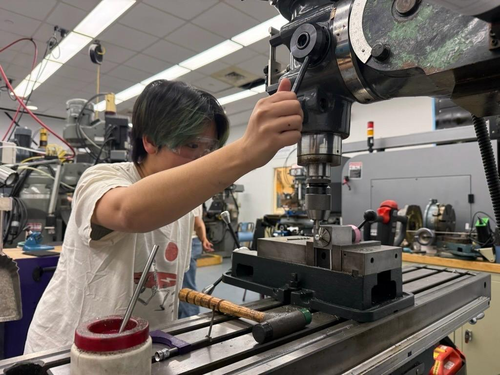
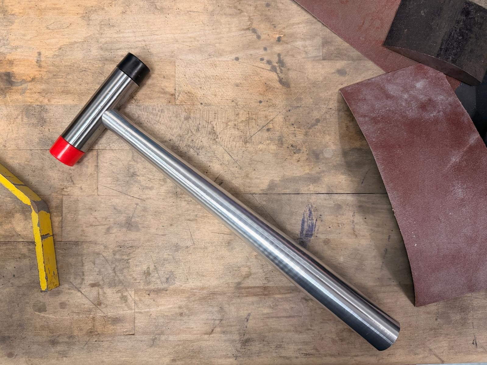
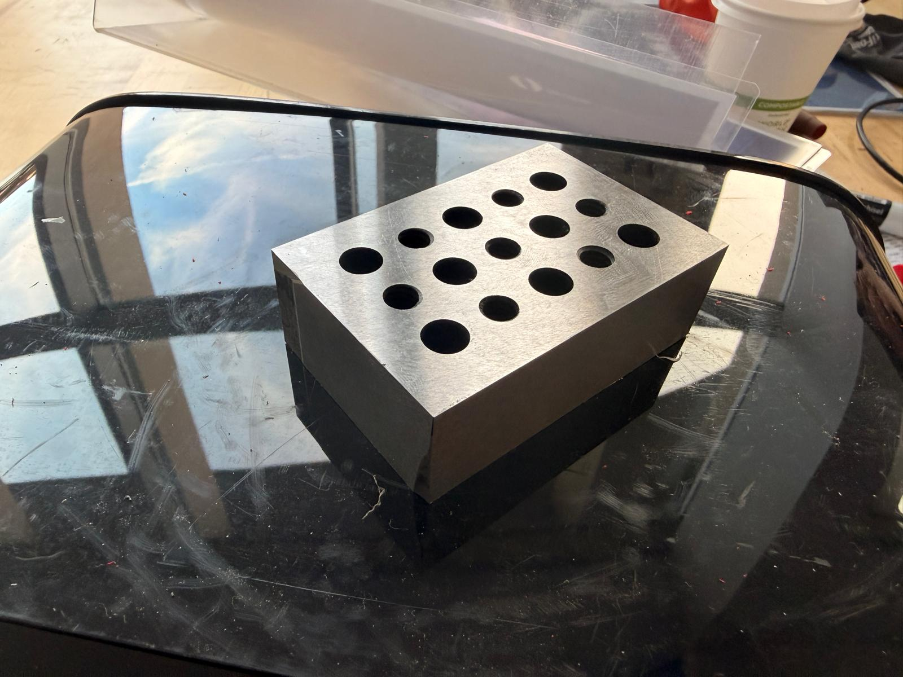

This semester, I really wanted to improve my machining skills and learn how machining is done so that I can better design for manufacturing. I am focusing on using the manual lathe and mill to create work holding devices.

Hammer head: turn to size, bore taper for mylon face insert, use mill to drill and tap hole for hammer handle.
Hammer handle has two parts: aluminum handle and steel insert.
For steel insert, cut a thread, make sure it fits in handle, knurl, use pneumatic press to press into handle.
For aluminum handle, drill out hole for steel insert. After pneumatic press, taper handle
Assembly: screw on face inserts to hammer head, screw hammer head onto handle.

Facing and squaring with manual mill. Drill and tap holes. Annealed in oven. Precisioned ground using surface grinder.
